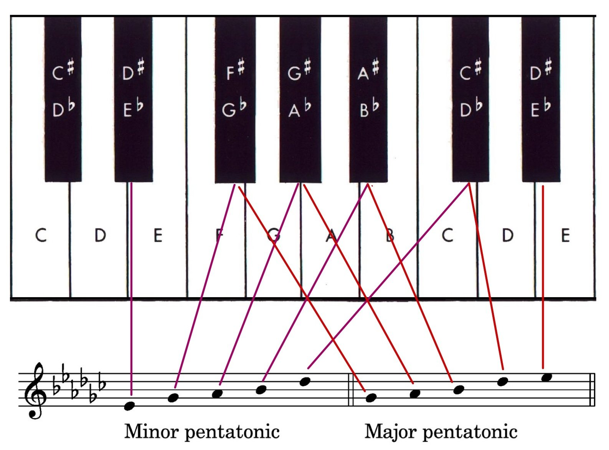
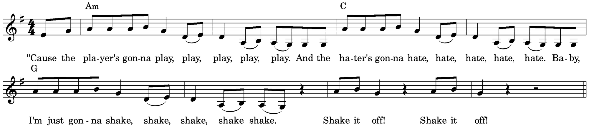
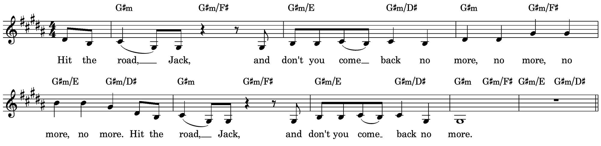
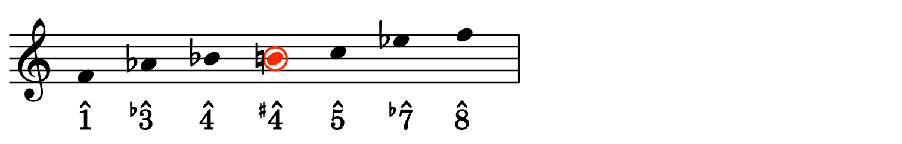
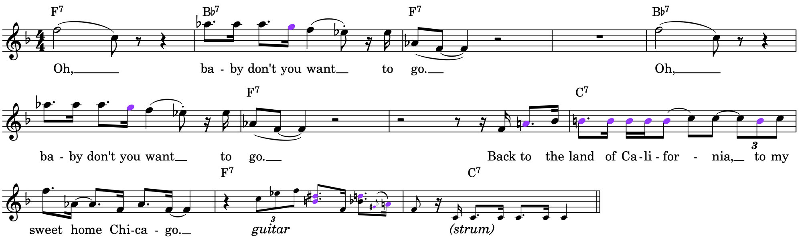

Staff
Modes: The Simple Truth
A mode is a scale defined by its pattern of whole and half steps around a tonic. Step through the lesson, listen to every mode, and compare it with major and minor. Use the arrow keys or the buttons to move between steps.
1 · What
Same notes, different home
The diatonic modes are seven different seven-note scales made by starting on each degree of the diatonic scale while keeping the same notes. Choose a major scale (C major is the white keys), then choose which of its degrees is the tonic: each one gives a different pattern of whole (W) and half (H) steps, so each sounds different, even though the notes are the same.
Keyboard
2 · What
Same home, different notes
Now keep the tonic the same (C) and change the notes. Written on one tonic, the modes show their most distinctive notes clearly. Each mode is major or natural minor with one or two notes changed, shown in red.
Staff
Keyboard
3 · How to recognize them
Major family, minor family
The best way to learn the modes: decide whether the 3rd above the tonic is major or minor, then remember the one note that's different from the major or natural minor scale. Tap a mode to hear its parent scale, then the mode, with the different note highlighted.
Major 3rd ☀
Minor 3rd ☾
Parent scale, then the mode
4 · Listening: real music
Modes in real music
Here are the diatonic modes at work in folk, rock and song. For each, find the tonic, decide whether its 3rd is major or minor, then listen for the one note that makes the mode. (Ionian and Aeolian are the everyday major and natural minor.)
Minor 3rd, but a raised 6th: the bright note in an otherwise minor tune.
Minor, with the lowered 2nd right above the tonic.
Entirely Lydian except for the bass note of a single chord, which comes from the major mode.
Major, with a lowered 7th: very common in rock.
The rarest diatonic mode: a lowered 2nd and a diminished 5th above the tonic.
Short excerpts are included for teaching under fair use (educational use). All rights remain with the artists and copyright holders.
5 · How: PADMIL
PADMIL: one note at a time
Line up the six common modes so each differs from its neighbor by a single note: Phrygian → Aeolian → Dorian → Mixolydian → Ionian → Lydian. Each step to the right raises one scale degree by a half step, which adds one sharp or removes one flat. PADMIL is the circle of fifths in disguise. Locrian fits on the far left: lower 5 of Phrygian.
With a modal key signature
Keyboard
6 · How: key signatures
Finding any modal key signature
Start from the tonic's major key signature, then count along PADMIL: Lydian one sharp more; Mixolydian one flat more; Dorian two flats more; Aeolian three; Phrygian four; Locrian five. (In real music, modal pieces often keep the ordinary major or minor key signature and add accidentals instead.)
Tonic
Major key signature
Modal key signature
7 · Listening
Name that mode by ear
Three steps: (1) find the tonic; (2) decide whether the 3rd above it is major or minor; (3) listen for the note that differs from major or natural minor. Each scale starts and ends on its tonic.
8 · Beyond diatonic
Modes with an augmented 2nd
Some modes include an augmented 2nd (+2): a gap of three half steps between neighboring letters. In common-practice music it appears only in harmonic minor (between 6 and 7), but it's central to Hungarian minor, Phrygian dominant (Freygish) and the Byzantine scale.
Staff
Keyboard
Hear them in music
Short excerpts are included for teaching under fair use (educational use). All rights remain with the artists and copyright holders.
9 · Beyond diatonic
Five notes: pentatonic and blues
Pentatonic scales have five notes and no half steps: only whole steps and minor 3rds. The black keys of a piano form one. Major and minor pentatonic are relatives (same notes, different tonic), and the blues scale adds one note to minor pentatonic: ♯4 / ♭5.
Staff
Keyboard
Pentatonic (five-note) scales are probably the most widespread scales on Earth: they provide a palette for music on every continent. In traditions that tune differently from Western equal temperament they vary, but they're usually built entirely from intervals larger than a half step. Compared with major:
Major pentatonic1̂ – 2̂ – 3̂ – 5̂ – 6̂
Minor pentatonic1̂ – ♭3̂ – 4̂ – 5̂ – ♭7̂

Pentatonic melodies, fuller harmony
Outside folk music played on pentatonically tuned instruments (often percussion or harps), purely pentatonic music is unusual. More often a pentatonic melody is harmonized with full chords that include notes outside the scale, and passing tones may decorate the melody without changing its five-note character.


The blues scale
The blues scale is a minor pentatonic scale with one added tone, ♯4̂ (or ♭5̂). Blues melodies use it as a framework, plus a nuanced vocabulary of embellishing tones.


10 · Beyond diatonic
Symmetrical scales
Whole-tone (all whole steps, 6 notes) and octatonic (alternating whole and half steps, 8 notes) divide the octave evenly. Because every note has the same surroundings, the tonic is ambiguous. Only 2 whole-tone and 3 octatonic collections exist: shift them and they repeat. Rotate the shape to see.
Pitch circle
Staff
Hear them in music
Short excerpts are included for teaching under fair use (educational use). All rights remain with the artists and copyright holders.
11 · Summary
Modes in a nutshell
Major familyLydian ♯4 · Ionian · Mixolydian ♭7
Minor familyDorian ♯6 · Aeolian · Phrygian ♭2 · Locrian ♭2 ♭5
Beyond+2 modes · pentatonic · blues · whole-tone · octatonic
12 · Practice
On to the drills
You've finished the lesson. Now practice what you learned in the Modes drills.
Each question explains its answer, and items you miss come back for review. Your progress is saved in this browser, and you can print a completion report for your professor. Teachers can also host the drills as a class game: students join on their own devices.